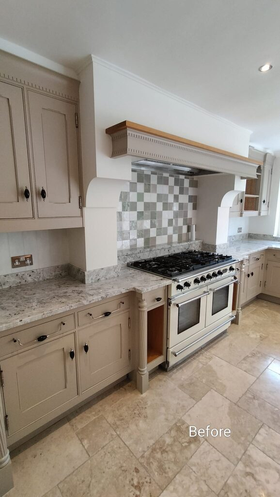
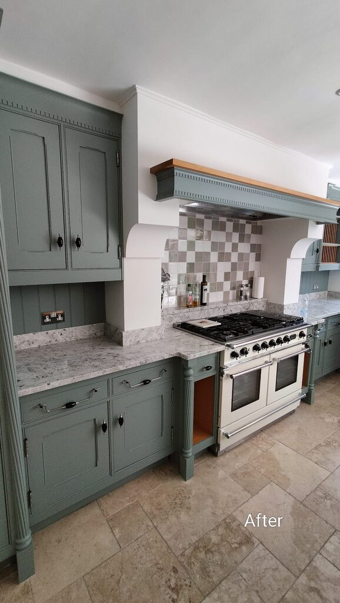
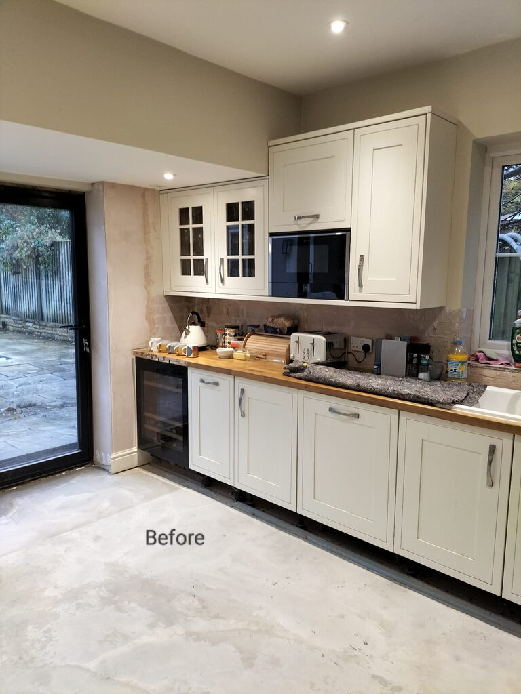
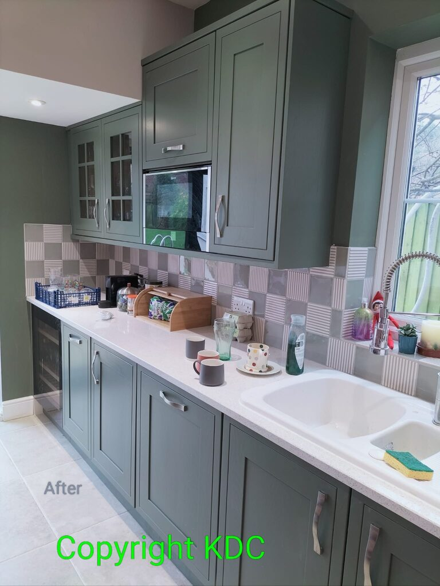
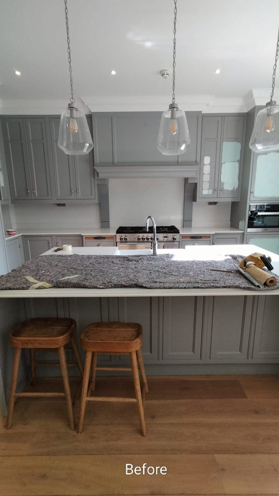
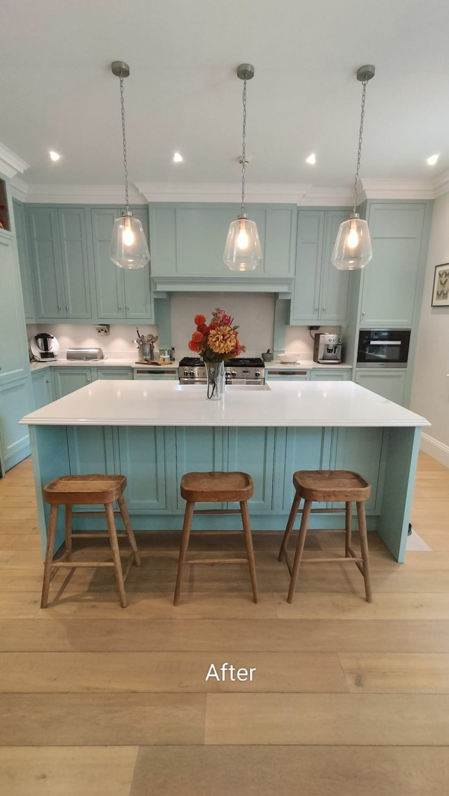

Dulux Accredited Kitchen Sprayer
The kitchen respray company for Winchester, Southampton and Hampshire.
We are an accredited Dulux kitchen respray partner focused exclusively on kitchen cabinet work — not a general spray shop. Our expertise is in spray painting and hand-painted finishes, particularly for traditional or custom kitchens.
We serve Hampshire, Surrey, Sussex, Wiltshire and Dorset. A respray gives you significant cost savings versus a complete kitchen replacement, with colour matching available across all the major colour charts.
We are a family-run, independent local business. Disruption in your home is minimal — approximately 2 afternoons — and respraying instead of replacing is the environmentally conscious choice.

Before
After
Before
After
Before
After